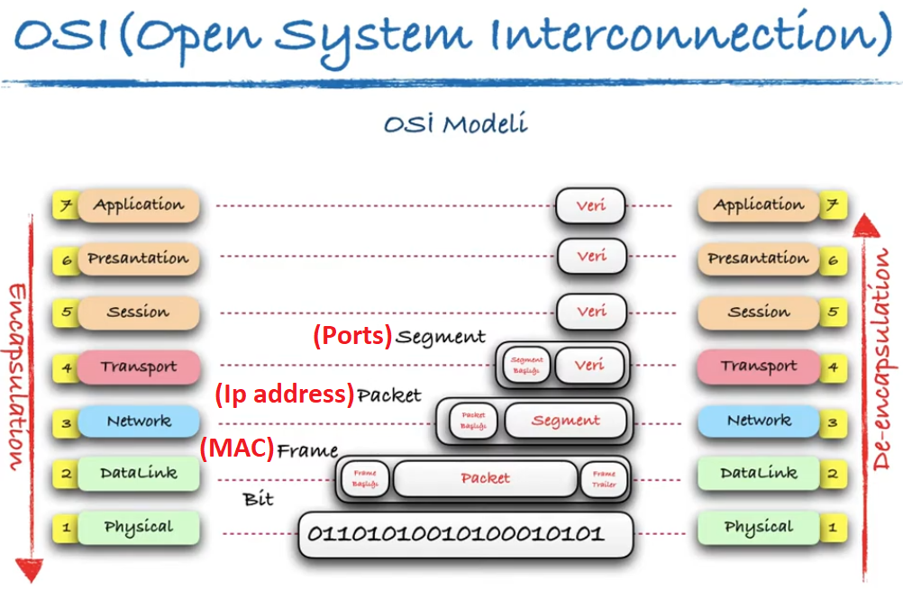

PDU
PDU
Protocol Data Unit telekomünikasyonda Protokol Veri Birimi teriminin anlamları şunlardır: Bir ağın eş düzey öğeleri arasına bir birim gibi ulaşan ve kontrolbilgisi, adres bilgisi veya veri içeren bilgidir.
PDU Türleri
